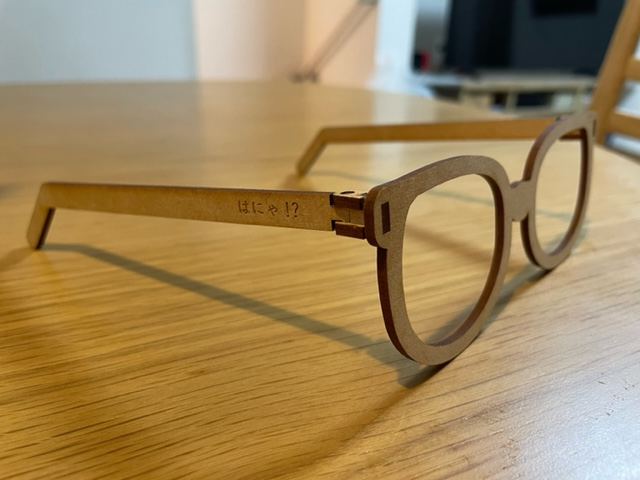
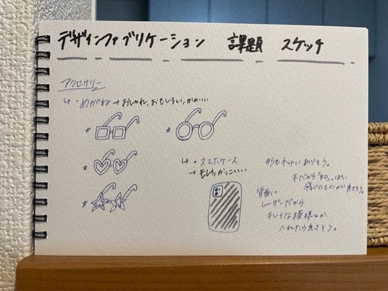
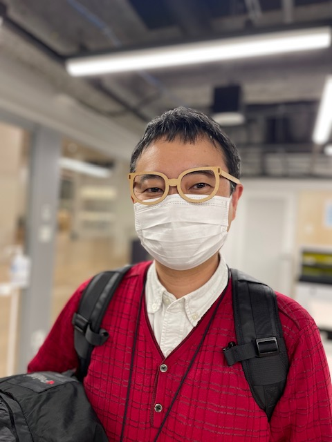
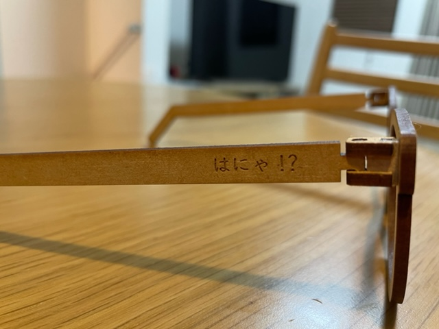

作品名：へんなめがね

スケッチ

構想→木製だから、木の温かみを感じられるような、だけど珍しさも少しあるものを作りたかった。
レーザーカッターでの作成だったので、その中でも比較的作りやすそうなものにした。
構想スケッチ内にもあるように、スマホケースも考えた。
以前レーザーカッターが普及してきた頃、テレビでオリジナルのスマホケースを作っているのがあった。
辞めた理由は、その時ケースを作っていたのではなく、木製のケースに、レーザーで彫刻をしていたので�、
今回は製作しないことにした。機会があれば、自分でスマホケースを持ってきて、好きな柄のケースを作ってみたい。
実際に作ったもの

ー感想ー
想像していたよりも、ものすごく大きいものになってしまった。
掴む部分も一般的なピンセットのように、少し角度をつけたものにしたかったが、
ただの斜めになってしまった。改善できるポイントだと思う。
ファイル
作品の説明

木製のめがね。サイドに最近気に入っている日本語を入れてみた。
以前レーザーカッターが普及してきた頃、テレビでオリジナルのスマホケースを作っているのがあった。
辞めた理由は、その時ケースを作っていたのではなく、木製のケースに、レーザーで彫刻をしていたので�、
今回は製作しないことにした。機会があれば、自分でスマホケースを持ってきて、好きな柄のケースを作ってみたい。
作品への想い
普段から目が悪く、めがねを使っていますが、すごく普通な黒縁のめがねをつけているので、
作品を見た人全員が「あっ」と驚くようなものを作りたかった。
他にも面白くなるような、ちょっとした工夫を加えたい。
調べたこと
このサイトに載っていたPDFファイルを使用した。
自分で線の色を変更したり、彫刻（テキスト）を入れたり、サイズを変更した。